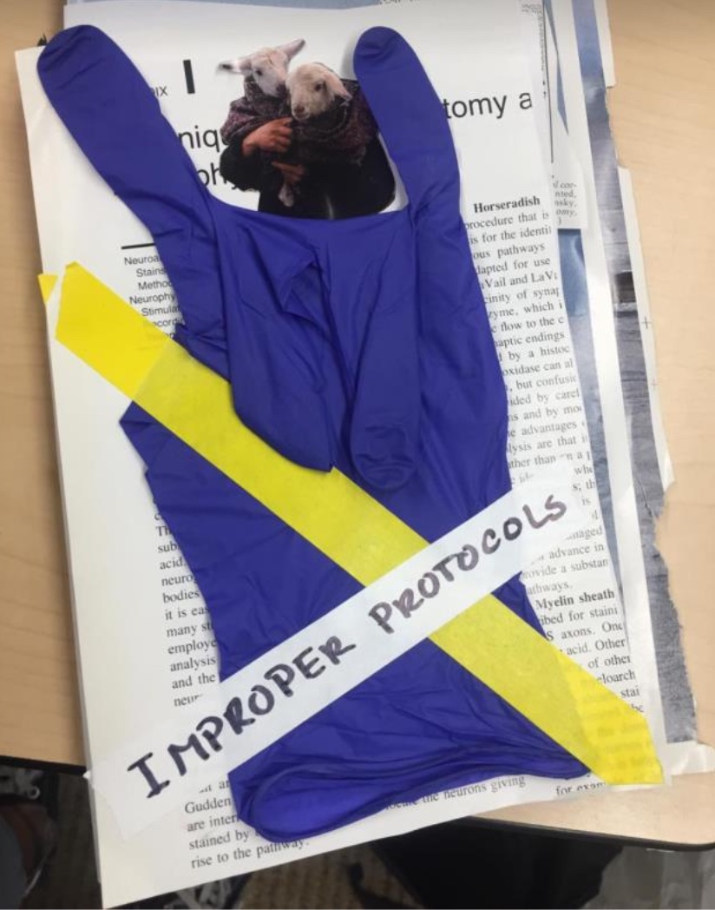
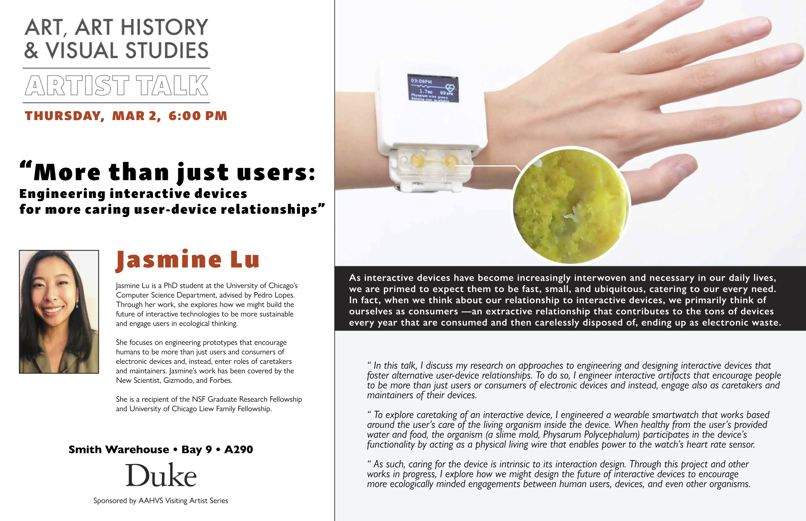
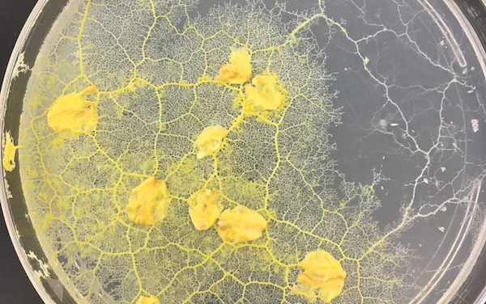

Hello. We are et al.
The et al lab at Duke University seeks to scaffold research and creative practice at the intersection of art and science.
With the generous support of Bass Connections ("Laboratory Art in Practice: Building a Model for an Art/Science Lab at Duke"), the lab is offering a two-semester series of courses designed to cultivate a environment that hybridizes the artist studio, the humanities seminar room, and the lab bench. In Fall 2022, students were introduced to historical, ethical and social descriptions of experimental practice from within science studies; learned lab techniques (e.g., microscopy, dissection, immunostaining, keeping a lab notebook, bioplastics); and studied artwork that incorporates media, instruments and practices from the life sciences. In Spring 2023, students are developing their own laboratory-based artistic research projects, culminating in an end-of-semester exhibition.
The lab is delighted that Bass Connections will continue to support our efforts in 2023-24.
Opportunities.
The et al lab is offering a summer 2023 opportunity for Duke students interested in helping to conceptualize and instantiate a small press publishing component for the lab. Our goal for the summer is to further develop the concepts below, to put out a call for our first zine publication, and to complete one publishing project. Students interested in design and printmaking are particularly encouraged to reach out.
dissolving inquiries
dissolving inquiries is an effort to open circulation channels for sharing historical materials related to science with artists and writers exploring practices of research in their work, from concepts in basic science research to queer science to biotech and design. dissolving inquiries has three foci, which together aim to manifest key aspects of the et al lab mission: 1) reprinting significant documents in the history of science that are currently difficult for artists to find or access 2) curating documents such as lab notebook pages, protocol sheets, correspondence, and oral histories (current and historical) that highlight scientific work that may otherwise go unspecified and uncredited 3) publishing chapbooks of poetry and experimental writing in conversation with science. In our early work, we hope to coalesce an audience around the materials and labor that underlie the work of scientific practice.
To begin, we plan to work through the permission process to print a recent English translation of J.H. van't Hoff's short 1874 pamphlet titled A Suggestion Looking to the Extension into Space of the Structural Formulas at Present Used in Chemistry. And a Note Upon the Relation Between the Optical Activity and the Chemical Constitution of Organic Compounds. This significant pamphlet in the history of science was originally published in Dutch and then later published in French as La Chimie dans l’espace (Chemistry in Space) and in German as Die Lagerung der Atome im Raume (The Arrangement of Atoms in Space), though the later versions include significantly more supplemental material.
improper protocols
improper protocols is a student-led zine concerned with exploring images of scientific and artistic impropriety: scenes of messiness, misplacement, displacement, and play.
In every lab manual/training/experimental protocol, there exist a set of do's and don'ts. Do follow protocol, do measure and record, but don't make mistakes, and don't play around. Accidental impropriety can be very costly in the scientific world. But what happens when impropriety is deliberate? What happens if we place value on the practices and aesthetics of laboratory messiness and playfulness?
In the process, we might ask: what does breaking protocol have to do with recording or apprehending experiential qualities of research? What details are lost in the strict following of protocol? How does breaking protocol differently orient or attune us to a particular experimental arrangement or laboratory space? improper protocols does not set out to challenge laboratory protocols themselves but rather to challenge the deliberateness of protocol while keeping in mind the dangers and discoveries that might accompany impropriety.
Events.

The et al lab hosts workshops, public lectures, exhibitions, and discussions at the intersection of art and science.
Slime Mold Workshop - March 3
 On Friday, March 3rd, University of Chicago HCI PhD researcher Jasmine Lu will lead a workshop on culturing and caring for Physarum Polycephalum, a species of slime mold, for students in the course "Artistic Research in the Science Lab."
Visiting Artist - Late March
In late March or early April, infradisciplinary designer, artist, and researcher Pinar Yoldas will visit the lab and discuss her latest project, Dark Botany.

Bass Connections Showcase - April 19
On Wednesday, April 19th, students working with the et al lab will participate in the Fortin Foundation Bass Connections Showcase. The event will be held from 3:30 - 6:30 PM in Penn Pavilion on Duke University's West Campus.
Exhibition - April 28
On Friday, April 28th, the lab will host an end-of-semester exhibition, the culmination of a two-semester exploration of laboratory techniques for artistic practice. The exhibition is tentatively planned for the atrium of the French Family Science Center.